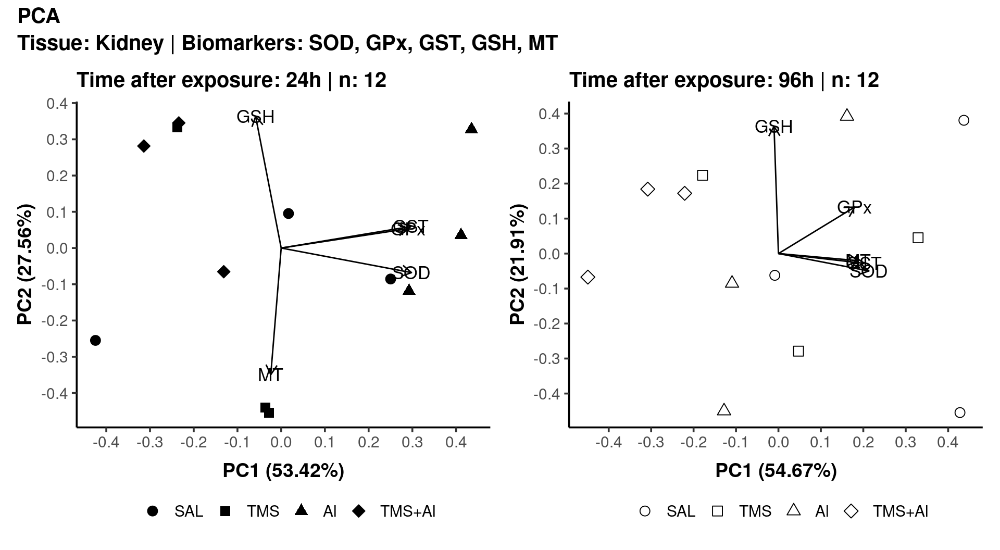
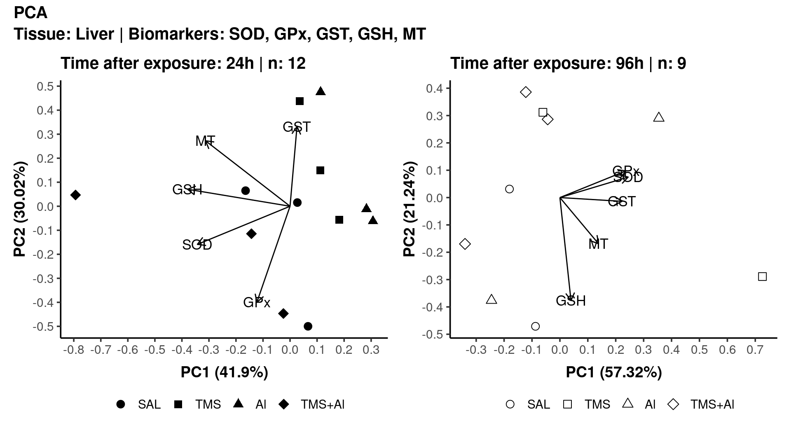
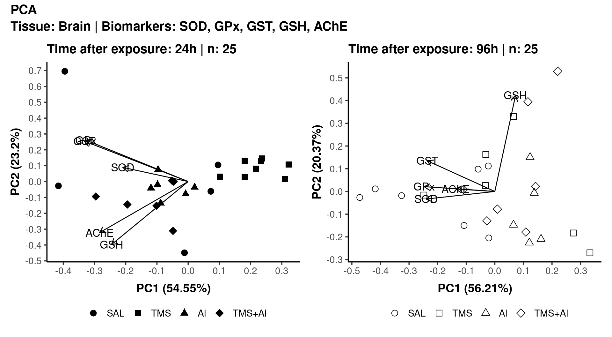
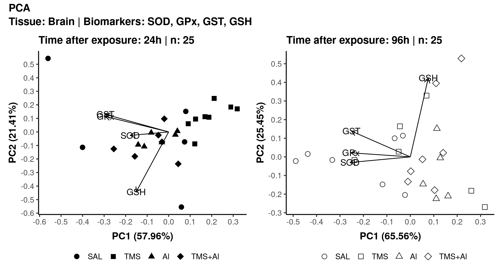
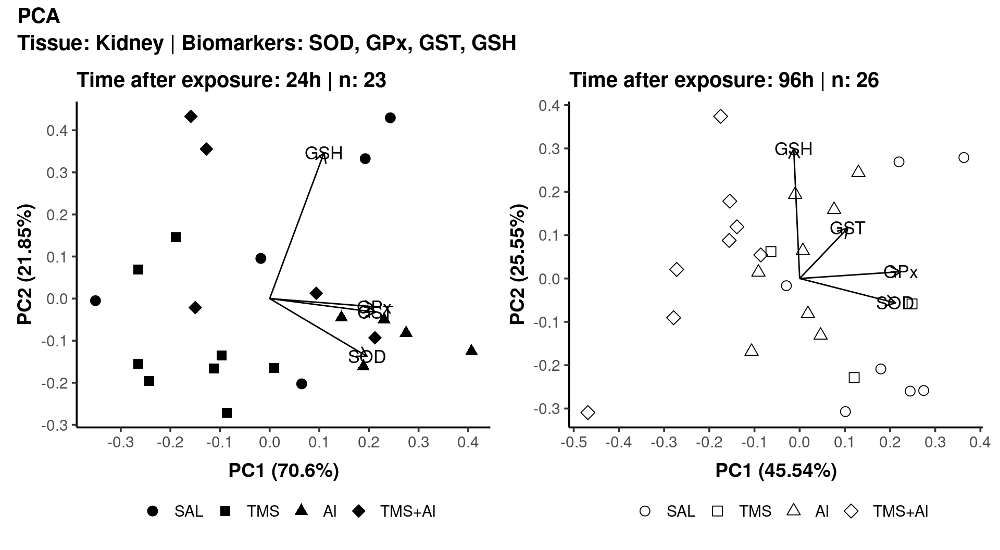
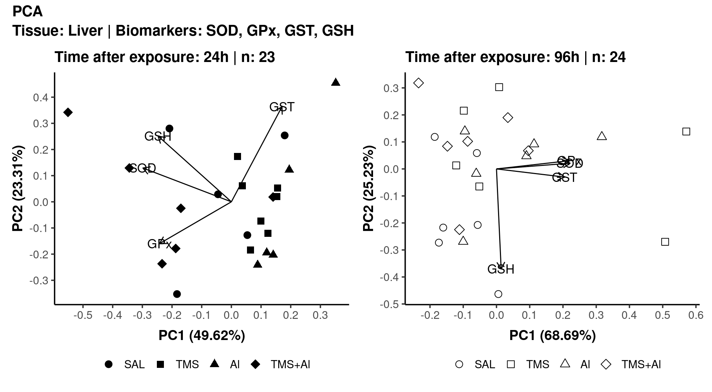

PCA
Maria Eduarda Galiciolli, Sabrina Calado,
Cláudia Sirlene Oliveira, Izonete Guiloski e Henrique Laureano
Last modification on 2022-08-29 09:33:28
To compute a Principal Component Analysis (PCA) (Mardia, Kent, and Bibby 1979; Venables and Ripley 2002) we can’t have empty cells in the database. Thus, to use all biomarkers, we split the whole data into three datasets, and for each dataset we perform an analysis per tissue.
SOD, GPx, GST, GSH, MT
Since we have five biomarkers (possible dependents - correlation different from zero) we can obtain five (independent) principal components (PCs).
As an example, for the tissue kidney and 24hrs after exposure, the first PC, alone, explains around 53% of all variation derived from the five biomarkers. The second PC adds by itself more 27.6% of explanation. Thus, with the first two PCs, we explain 81% of all variation generated by the five biomarkers (per tissue and time after exposure).


SOD, GPx, GST, GSH, AChE

SOD, GPx, GST, GSH



References
The analysis was performed with the R (R Core Team 2022) language and environment for statistical computing. The following R packages were used: {dplyr} (Wickham et al. 2022), {ggplot2} (Wickham 2016), {ggfortify} (Tang, Horikoshi, and Li 2016; Horikoshi and Tang 2018) and {patchwork} (Pedersen 2020).
For the PCA we have these two references: Mardia, Kent, and Bibby (1979), Venables and Ripley (2002).